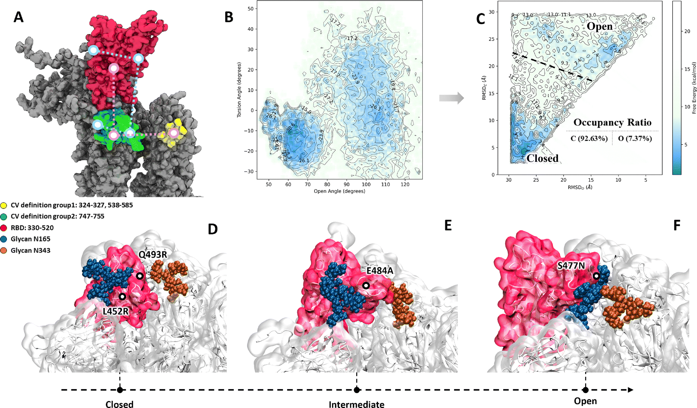
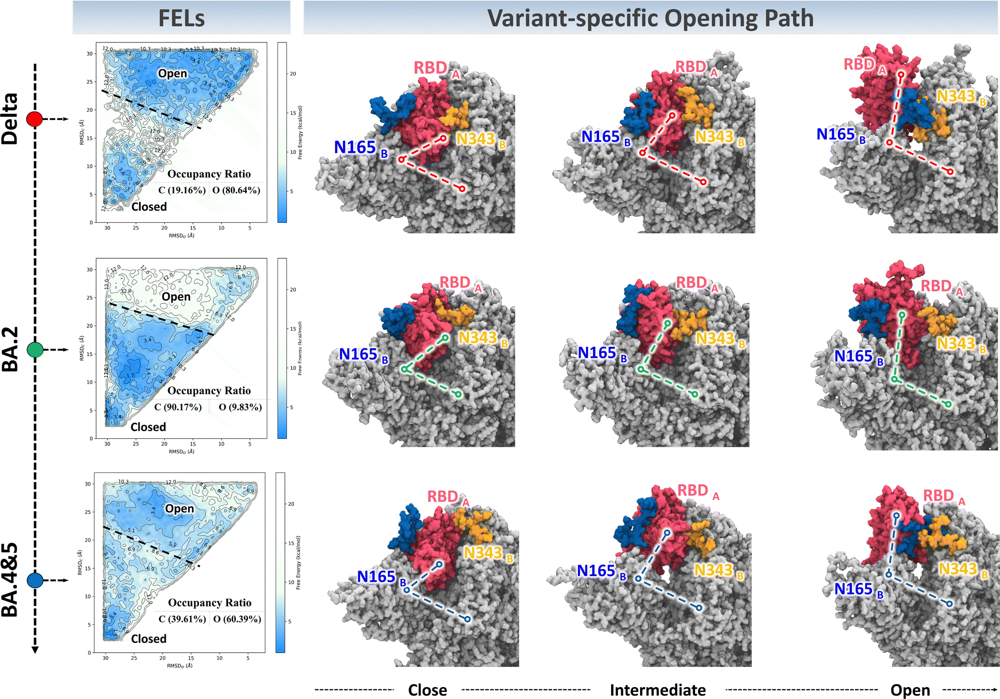
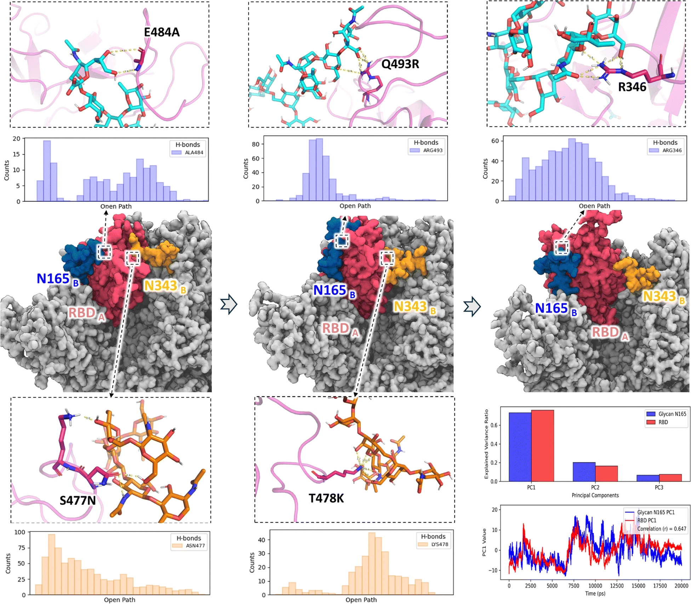
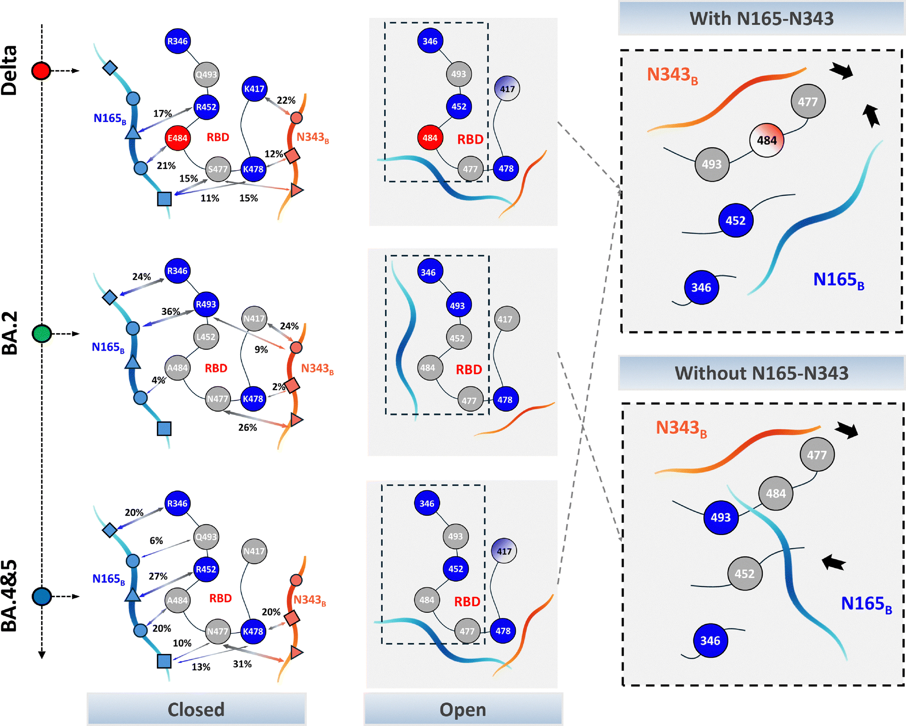

Open-close Dynamics
Overview
This section summarizes the work Evolutionary Aspect of Spike Glycoprotein's Conformational Dynamics. The central idea is that spike open-close dynamics are not a passive consequence of mutation, but an independently tunable trait that is continuously optimized during viral evolution.
Beyond sequence substitutions alone, the work emphasizes coupled regulation between amino-acid mutations and glycan motion, especially around the receptor-binding domain (RBD). This coupling reshapes the conformational landscape that controls accessibility, receptor interaction, and downstream fitness.
Mechanistic Focus
The work highlights glycan-assisted gating behavior in open-close transitions, with specific attention to glycans around N165, N234, and N343 and their role in stabilizing or biasing conformational states.
Single mutations and mutation combinations are discussed as dynamic modulators rather than only static structural edits. The key question is how variant-specific mutations synergize with glycan dynamics to shift free-energy preferences between closed, intermediate, and open states.

Figure 1. Conformational dynamics of the SARS-CoV-2 Spike Protein and its synergistic regulatory mechanism by mutations and glycans. (A) Collective variables for the opening transition are shown in green and yellow dashes. (B) The geometric free energy landscape for the WT S protein, projected onto the opening and torsional angle CVs. (C) The corresponding free energy landscape was re-projected onto RMSD-based coordinates. (D–F) Structural snapshots illustrating the dynamic interaction network between key mutations and adjacent glycans at different stages of RBD opening.

Figure 2. Comparative analysis of RBD opening dynamics across SARS-CoV-2 variants. The RMSD-based FELs for the Delta, BA.2, and BA.4&5 variants are shown on the left, illustrating their distinct thermodynamic stability for the open and closed states. The calculated low free energy state occupancy ratio for the open and closed states is directly annotated on each landscape, quantifying the thermodynamic preference. The panels on the right illustrate the corresponding variant-specific opening pathways by showing representative structures for the closed, intermediate, and open states. The pathway is defined by the relative positions of the RBD (red), the N165 glycan (blue), and the N343 glycan (orange). The distinct trajectories for Delta (red dashed line), BA.2 (green), and BA.4&5 (blue) reveal that each variant utilizes a unique structural mechanism for the RBD opening transition, correlating with the thermodynamic differences observed in their respective FELs.
Computational Strategy
The workflow integrates all-atom molecular dynamics, metadynamics, and free-energy calculations, using geometric descriptors (for example angle and dihedral coordinates) to quantify conformational motion.
Comparative analyses are shown across major evolutionary stages (WT, Alpha, Delta, Omicron lineages), with mutation-level decomposition to identify how specific substitutions contribute to observed dynamic shifts.
Key Findings
Open-close behavior evolves across variants in a non-uniform way, supporting the view that conformational dynamics are under selection. Mutation-glycan interactions are repeatedly implicated as a mechanism for landscape reshaping.
Examples in the deck point to mutation-dependent changes in glycan coupling and receptor-related behavior, including discussions around N501Y, L452R, E484A, Q493R, and lineage-dependent context effects (including BA.2/BA.4-5/JN.1-related comparisons).
Taken together, the results motivate interpreting spike evolution through dynamic free-energy landscapes, not only static sequence or structure snapshots.

Figure 3. The dynamic changes in the interactions between key residues and adjacent glycan (N165, N343) during the transition path of the RBD of the BA.2 variant from the closed state to the open state. The lower right corner is the motion correlation analysis of RBD-glycan N165 based on PCA. The upper bar chart shows the proportions of the first three principal components, and the lower one shows the comparison of the motion trajectories of the first principal component.

Figure 4. Schematic model of the RBD opening mechanism. This figure illustrates two different RBD opening mechanisms. The “no N165–N343 glycan contact” mechanism was observed in the BA.2 variant. The “with N165–N343 glycan contact” mechanism was observed in the Delta and BA.4&5 variants.
Source
- [1] Xu, W., Guo, T., & Su, H. (2026). Evolutionary Aspect of Spike Glycoprotein's Conformational Dynamics. https://doi.org/10.1039/d5cp04391c